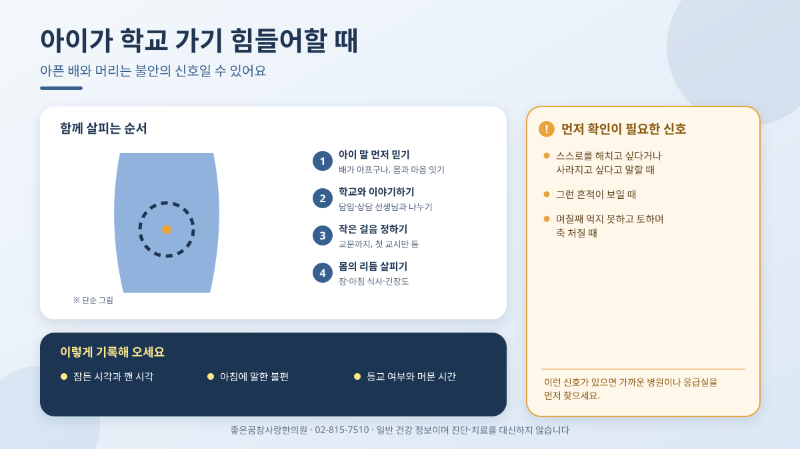

이종호 한의사 감수좋은꿈참사랑한의원 대표원장 (한의사 면허번호 19769)발행 2026-11-26 · 수정 2026-11-26
이 글의 차례
아침 일곱 시 반, 현관 앞에서 아이가 신발을 신다 말고 주저앉습니다. "엄마, 배가 너무 아파." 어제도, 그제도 같은 시각에 같은 말이었습니다. 이불 속에 다시 들어가 꼼짝하지 않는 아이를 보며, 보호자는 출근 시간과 아이 얼굴 사이에서 어쩔 줄 모릅니다.
그런데 이상하게도 학교에 가지 않기로 하면 점심 무렵부터 아이는 멀쩡해 보입니다. 주말에는 배가 아프다는 말이 없습니다. 그러다 일요일 저녁이 되면 다시 표정이 어두워집니다. 보호자는 혹시 꾀병인가 싶다가도, 아이 얼굴이 정말 하얗게 질린 것을 보면 마음이 복잡해집니다.
진료실에서 이런 이야기를 들을 때 저는 먼저 말씀드립니다. 아이가 아프다고 하는 배와 머리는 대개 진짜로 아픈 것이라고요. 불안은 마음에만 머물지 않고 배와 머리, 잠과 입맛으로 나타납니다. 아이는 그 불안을 말로 설명하기 어려워 몸이 아프다는 말로 대신하는 경우가 많습니다.
등교를 힘들어하는 아이를 돕는 일은 한 곳에서 다 할 수 있는 일이 아닙니다. 보호자, 학교, 소아청소년 정신건강 전문가, 그리고 몸의 불편을 함께 보는 의료진이 같은 방향을 바라볼 때 아이가 조금씩 다시 걸음을 뗄 수 있습니다. 이 글은 그 출발점을 함께 정리한 것입니다.
등교 거부는 어떤 모습으로 나타나나요
등교 거부는 아이가 학교에 가는 것을 몹시 힘들어하거나, 가더라도 오래 머물지 못하는 상태를 말합니다. 아예 집을 나서지 못하는 아이도 있고, 교문 앞에서 돌아오는 아이, 보건실을 자주 찾다 조퇴하는 아이, 지각이 잦아지는 아이도 있습니다.
몸의 불편이 함께 오는 경우가 많습니다. 아침마다 배가 아프다, 머리가 아프다, 속이 메스껍다, 어지럽다고 하고, 실제로 토하거나 설사를 하기도 합니다. 이런 불편은 등교 시간이 가까울수록 심해지고, 학교에 가지 않기로 하면 몇 시간 안에 가라앉는 흐름을 보이곤 합니다.
밤에 잠들기 어려워하거나, 일요일 저녁과 방학 끝 무렵에 유난히 예민해지는 모습도 흔합니다. 짜증이 늘고, 사소한 일에 울음을 터뜨리고, 학교 이야기만 나오면 입을 닫는 아이도 있습니다.
왜 아이는 학교 가기를 힘들어할까요
등교 거부 뒤에는 한 가지가 아니라 여러 이유가 겹쳐 있는 경우가 많습니다. 아이마다 무게가 다르니, 아래 가운데 어떤 것이 우리 아이에게 해당하는지 천천히 살펴보세요.
- 보호자와 떨어지는 것이 불안한 분리 불안
- 친구 관계의 어려움, 놀림이나 따돌림
- 발표, 시험, 성적에 대한 부담
- 선생님이나 반 분위기가 낯설거나 무서운 느낌
- 전학, 이사, 동생의 탄생, 가족의 변화
- 잠이 부족하거나 밤낮이 바뀐 생활 리듬
어린 학년에서는 분리 불안이, 고학년과 중학생 무렵에는 친구 관계와 평가에 대한 부담이 더 큰 몫을 차지하는 경향이 있습니다. 아이가 겪는 일을 바로 알기 어려울 때도 많아서, 몸의 불편과 생활의 변화를 함께 살피며 실마리를 찾아가야 합니다.
학교에 가지 않고 집에 있으면 불안이 잠시 줄어듭니다. 그 편안함이 다음 날 등교를 더 어렵게 만드는 고리가 되기도 합니다. 그래서 쉬는 것과 다시 나서는 것 사이의 균형을 아이 상태에 맞춰 함께 잡아 가는 것이 중요합니다.
꾀병과는 어떻게 다른가요
보호자가 가장 많이 하시는 고민이 이것입니다. 그런데 꾀병은 아이가 일부러 아픈 척을 하는 것이고, 등교 거부에서 오는 복통과 두통은 불안 때문에 몸이 실제로 반응하는 것입니다. 긴장하면 장이 빨리 움직이고 근육이 굳으며 두통이 생기는 것은 어른도 마찬가지입니다.
아이가 "진짜 아파"라고 할 때 "거짓말하지 마"라고 하면 아이는 자기 몸의 느낌을 믿지 못하게 되고, 말할 곳을 잃습니다. 대신 "배가 아프구나, 학교 생각하면 더 아프니?"처럼 몸의 느낌과 마음을 이어 주는 말을 건네 보세요.
다만 몸의 불편이 정말 다른 이유에서 오는 경우도 있으니, 복통이나 두통이 잦다면 소아청소년과에서 한 번은 확인해 두시는 것이 좋습니다. 검사에서 큰 이상이 없다는 것을 아는 것만으로도 보호자와 아이 모두 마음이 한결 가벼워질 수 있습니다.
나이에 따라 조금 다르게 봅니다
초등학교 저학년 아이는 보호자와 헤어지는 순간이 가장 힘든 경우가 많습니다. 교문 앞에서 손을 놓지 못하고 울지만, 교실에 들어가 몇십 분이 지나면 친구들과 잘 어울리는 아이도 있습니다. 이런 아이는 헤어지는 인사를 짧고 일정하게 하는 것이 도움이 될 수 있습니다.
고학년과 중학생은 이유를 말하지 않는 경우가 많습니다. 친구 관계나 성적, 외모처럼 스스로도 정리하기 어려운 고민을 안고 있을 수 있고, 보호자에게 걱정을 끼치고 싶지 않아 입을 닫기도 합니다. 이 시기 아이에게는 캐묻기보다 언제든 이야기할 수 있다는 신호를 꾸준히 보내 주는 것이 중요합니다.
사춘기 무렵에는 잠의 리듬이 늦어져 아침에 일어나기 힘든 것도 겹칩니다. 밤늦게까지 휴대폰을 보다 잠들면 아침의 몸은 더 무겁고, 무거운 몸은 학교 가기를 더 어렵게 만듭니다. 그래서 잠의 리듬을 함께 살피는 것이 마음을 돕는 일과 이어집니다.
보호자는 무엇부터 해 볼 수 있을까요
먼저 아이의 이야기를 들을 시간을 만들어 주세요. 등교 시간 현관 앞은 이야기를 나누기에 좋은 때가 아닙니다. 저녁 산책길이나 잠자리처럼 아이가 편안한 때에 "요즘 학교에서 제일 힘든 게 뭐야?"라고 가볍게 물어보세요. 바로 대답하지 않아도 괜찮습니다.
담임 선생님과 이야기를 나누는 것도 중요합니다. 학교에서 아이가 어떻게 지내는지, 친구 관계는 어떤지, 보건실을 자주 찾는지 여쭤 보세요. 학교 안 상담실이나 상담 선생님과 연결해 주실 수도 있습니다.
등교 거부가 몇 주 이상 이어지거나, 아이가 몹시 우울해 보이고 잠과 입맛이 크게 달라졌다면 소아청소년 정신건강의학과나 아동 상담 전문가와 상의해 보시길 권합니다. 불안을 다루는 방법을 아이와 보호자가 함께 배우는 과정이 도움이 될 수 있습니다.
다시 학교로 향하는 걸음은 어떻게 뗄까요
등교를 오래 쉬면 다시 시작하는 문턱이 점점 높아집니다. 그래서 완전히 쉬기보다 아이가 견딜 수 있는 작은 걸음부터 함께 정해 보는 방법이 있습니다. 교문까지 같이 가기, 첫 교시만 있다 오기, 좋아하는 수업이 있는 날부터 가기처럼 단계를 나눠 보는 것입니다.
작은 걸음을 해냈을 때는 결과보다 시도를 알아봐 주세요. "오늘 교문까지 간 거 정말 용기 낸 거야"라는 말은 아이에게 다음 걸음을 뗄 힘이 됩니다. 반대로 다른 아이와 비교하거나 "이것도 못 하니"라는 말은 불안을 키울 수 있습니다.
이 과정은 학교, 상담 전문가와 함께 계획을 세울 때 더 수월합니다. 보호자 혼자 모든 것을 짊어지지 않으셔도 됩니다. 보호자도 지치지 않도록 주변의 도움을 받으시길 권합니다.
형제자매와 가족은 어떻게 함께할까요
한 아이가 등교를 힘들어하면 집안 전체의 아침이 흔들립니다. 형제자매는 왜 쟤만 학교에 안 가냐고 묻기도 하고, 보호자 사이에서도 보내야 한다, 쉬게 해야 한다는 의견이 갈리기도 합니다. 가족이 서로 다른 말을 하면 아이는 더 혼란스러워합니다.
그래서 보호자끼리 먼저 방향을 맞추는 시간이 필요합니다. 아이에게 건넬 말과 아침의 순서를 미리 정해 두면, 바쁜 아침에도 같은 목소리를 낼 수 있습니다. 형제자매에게는 지금 그 아이가 몸과 마음이 조금 힘든 시기라고 짧게 설명해 주시면 됩니다. 형제자매도 나름대로 마음을 쓰고 있을 수 있으니, 그 아이와 따로 보내는 시간도 조금 챙겨 주세요.
먼저 이렇게 여쭙니다
처음 오시면 보호자께 아래 질문들을 여쭙고, 아이가 말할 수 있는 만큼 아이에게도 물어봅니다.
- 등교를 힘들어한 지 얼마나 되었나요?
- 아침에 주로 어떤 불편을 말하나요?
- 주말이나 방학에는 어떤가요?
- 잠드는 시각과 깨는 시각, 밤에 깨는 일은 어떤가요?
- 아침 식사와 입맛, 대변은 어떤가요?
- 학교나 가정에서 최근 달라진 일이 있나요?
아이에게는 "아플 때 어디가 어떻게 아파?", "학교에서 제일 좋아하는 시간은 언제야?"처럼 대답하기 쉬운 질문부터 건넵니다. 좋아하는 것을 먼저 이야기하다 보면 힘든 이야기도 조금씩 꺼내는 아이들이 있습니다.
일상에서 먼저 해 볼 수 있는 것
불안한 아이에게는 예측할 수 있는 하루가 큰 힘이 됩니다. 몸의 리듬을 고르게 하는 것부터 시작해 보세요.
- 잠드는 시각과 깨는 시각을 주말에도 크게 다르지 않게 맞추기
- 잠들기 1시간 전에는 화면을 끄고 조용한 시간 갖기
- 아침에 서두르지 않도록 10~15분 일찍 깨우기
- 아침은 많이 먹이기보다 따뜻한 음료와 가벼운 음식으로 시작하기
- 배가 아플 때 따뜻한 손으로 배를 천천히 쓸어 주기
- 하루에 한 번은 아이가 좋아하는 일을 함께하는 시간 만들기
숨 고르기도 함께 연습해 보세요. 코로 천천히 들이쉬고, 입으로 촛불을 끄듯 길게 내쉬는 것을 몇 번 반복하는 것입니다. 긴장할 때 아이 스스로 할 수 있는 방법이 있으면, 불안이 올라와도 조금 덜 휩쓸립니다.
보호자 자신의 불안도 살펴봐 주세요. 아이는 보호자의 표정과 목소리에서 많은 것을 읽습니다. 보호자가 걱정을 조금 내려놓고 담담하게 아침을 맞을 때, 아이도 그 안정감을 함께 느끼곤 합니다.
한의원에서 함께 살필 수 있는 경우
- 아침마다 배가 아프고 입맛이 없어 아침을 거의 먹지 못하는 경우
- 긴장하면 두통이나 어지럼, 메스꺼움이 함께 오는 경우
- 잠들기 어렵고 자다가 자주 깨 아침에 일어나기 힘든 경우
- 손발이 차고 쉽게 지치며 몸이 늘 움츠러들어 있는 경우
- 상담이나 정신건강의학과 진료와 함께 몸의 불편을 살피고 싶은 경우
좋은꿈참사랑한의원에 오시면 먼저 아래 '먼저 확인이 필요한' 신호가 없는지부터 봅니다. 그다음 맥을 짚고 아이의 소화, 잠, 손발 온도, 긴장도를 함께 살핍니다. 진찰한 내용을 바탕으로 생활 관리 안내, 아이가 받아들일 수 있는 범위의 침, 한약 상담 가운데 지금 상태에 맞는 것을 고릅니다.
아이가 침을 무서워하면 억지로 하지 않습니다. 한약을 상의할 때는 아이가 먹는 약을 모두 확인하고 신중하게 정합니다. 정신건강의학과에서 처방받은 약이 있다면 그대로 이어 가시고, 약을 줄이거나 멈추는 일은 처방한 선생님과 상의하셔야 합니다. 한의원 진료는 상담과 정신건강의학과 진료를 대신하는 것이 아니라 나란히 가는 것입니다.
이렇게 기록해 오시면 상담이 쉬워집니다
2주 정도 아이의 아침과 저녁을 간단히 적어 보세요. 보호자의 판단보다 있는 그대로의 모습을 적는 것이 중요합니다.
- 잠든 시각과 깬 시각
- 아침에 말한 불편(배, 머리, 메스꺼움 등)과 시각
- 등교 여부와 학교에 머문 시간
- 아침 식사와 입맛
- 주말과 평일의 차이
- 아이가 편안해 보였던 때와 그때 하던 일
기록을 보면 특정 요일, 특정 수업, 특정 행사 전에 불편이 커지는 흐름이 보이기도 합니다. 그 흐름은 학교 선생님, 상담 전문가와 이야기를 나눌 때도 소중한 자료가 됩니다.
보호자께 드리고 싶은 말
아이가 학교에 가지 못하는 아침이 이어지면 보호자는 내가 무엇을 잘못했나 자책하기 쉽습니다. 그런데 등교 거부는 누구 한 사람의 잘못으로 생기는 일이 아닙니다. 아이가 지금 감당하기 버거운 무언가를 몸으로 알려 주고 있는 것이고, 그 신호를 알아챈 것만으로도 이미 중요한 첫걸음을 뗀 셈입니다.
오늘 저녁에는 학교 이야기 대신 아이가 좋아하는 것을 함께해 보세요. 편안한 시간이 쌓일수록 아이는 힘든 이야기도 꺼낼 수 있는 자리가 있다는 것을 느끼게 됩니다.
이런 증상은 먼저 확인이 필요합니다
- 아이가 스스로를 해치고 싶다거나 사라지고 싶다는 말을 하거나 그런 흔적이 보이는 경우
- 며칠째 거의 먹지 못하고 토하며 아이가 축 처져 기운을 차리지 못하는 경우
이런 신호가 있으면 한의원보다 가까운 병원이나 응급실을 먼저 찾으세요.
스스로를 해치고 싶은 생각이 든다면 ☎ 109에 연락해 주세요.
함께 읽으면 좋은 글
- 아이가 배가 아프다고 할 때 위치와 시간은 어떻게 적어 두면 좋을까요?
- 아이가 머리가 아프다는 말을 자주 할 때(소아 두통)는 무엇을 살피나요?
- 새 학기가 시작된 뒤 아이가 밤에 잠들기 어려워하면 어떻게 살피나요?
- 걱정이 꼬리를 물고 멈추지 않는 범불안(불안장애)은 어떻게 살피나요?
- 아이가 눈을 자꾸 깜빡이거나 킁킁거리는 틱이 보일 때 부모는 무엇을 살피나요?

여쭙는 것
- 등교를 힘들어한 지 얼마나 되었나요?
- 아침에 주로 어떤 불편을 말하나요?
- 주말이나 방학에는 어떤가요?
생활에서 해 볼 것
- 잠드는 시각과 깨는 시각을 주말에도 크게 다르지 않게 맞추기
- 잠들기 1시간 전에는 화면을 끄고 조용한 시간 갖기
- 아침에 서두르지 않도록 10~15분 일찍 깨우기
한의원에서 함께 살필 것
- 아침마다 배가 아프고 입맛이 없어 아침을 거의 먹지 못하는 경우
- 긴장하면 두통이나 어지럼, 메스꺼움이 함께 오는 경우
- 잠들기 어렵고 자다가 자주 깨 아침에 일어나기 힘든 경우
먼저 확인이 필요한 신호
- 아이가 스스로를 해치고 싶다거나 사라지고 싶다는 말을 하거나 그런 흔적이 보이는 경우
- 며칠째 거의 먹지 못하고 토하며 아이가 축 처져 기운을 차리지 못하는 경우
한눈에 보는 표
| 구분 | 핵심 |
|---|---|
| 여쭙는 것 | 등교를 힘들어한 지 얼마나 되었나요? 아침에 주로 어떤 불편을 말하나요? |
| 생활에서 해 볼 것 | 잠드는 시각과 깨는 시각을 주말에도 크게 다르지 않게 맞추기 잠들기 1시간 전에는 화면을 끄고 조용한 시간 갖기 |
| 한의원에서 함께 살필 것 | 아침마다 배가 아프고 입맛이 없어 아침을 거의 먹지 못하는 경우 긴장하면 두통이나 어지럼, 메스꺼움이 함께 오는 경우 |
| 먼저 확인이 필요한 신호 | 아이가 스스로를 해치고 싶다거나 사라지고 싶다는 말을 하거나 그런 흔적이 보이는 경우 며칠째 거의 먹지 못하고 토하며 아이가 축 처져 기운을 차리지 못하는 경우 |
자주 묻는 질문
아이가 배가 아프다는데 학교에 보내야 할까요, 쉬게 해야 할까요?
한 가지 답이 있기보다 아이 상태에 따라 다릅니다. 열이나 구토처럼 몸이 아픈 신호가 뚜렷하다면 쉬게 하고, 불안이 큰 몫이라면 교문까지 같이 가기처럼 작은 걸음을 학교, 상담 전문가와 함께 정해 보시길 권합니다.
등교 거부는 꾀병 아닌가요?
불안 때문에 몸이 실제로 반응해 배나 머리가 아픈 경우가 많습니다. 아이의 말을 먼저 믿어 주시고, 몸의 불편은 소아청소년과에서 한 번 확인한 뒤 마음의 이야기를 함께 살펴보세요.
한의원 진료만으로 등교 거부를 도울 수 있나요?
등교 거부는 학교, 상담 전문가, 정신건강의학과가 함께 살펴야 하는 경우가 많습니다. 한의원에서는 그 과정과 나란히 아이의 잠과 소화, 긴장 같은 몸의 불편을 함께 살핍니다.
아이가 침을 무서워하는데 진료를 받을 수 있나요?
억지로 하지 않습니다. 맥을 짚고 이야기를 나누며 생활 관리부터 함께 정하고, 아이가 받아들일 수 있는 방법을 천천히 찾아갑니다.
좋은꿈참사랑한의원은 재진 때 지난번 이야기부터 이어서 여쭙니다. 진료시간과 예약은 오시는 길에서 확인하세요.
어디서 상담받을 수 있나요?
좋은꿈참사랑한의원은 서울 동작구 만양로2길 2 신성빌딩 3층·5층(서울 동작구 상도동, 7호선 상도역 3번 출구 근처)에 있습니다. 한의사 3명(이종호 대표원장, 조영기 수석진료원장, 정원영 진료원장)이 진료합니다. 진료시간은 평일 09:30~20:00(점심 13:00~14:00), 토·일·공휴일 09:30~15:00이며, 방문 전 전화로 확인을 권합니다. 예약은 네이버 예약, 카카오톡 상담, 전화 02-815-7510로 받습니다.
이 글은 일반적인 건강 정보이며 개인의 진단이나 치료를 대신하지 않습니다. 증상이 있거나 복용 중인 약이 있다면 진료를 통해 확인하세요. 치료 효과는 개인마다 다를 수 있습니다.
작성 기준: 일반적으로 알려져 있는 건강 정보를 참고해 정리했습니다(대표원장 감수). 증상 기록은 1~2주 동안 하루 1회, 비슷한 시간에 적어 오시면 지난 상태와 비교하기 쉽습니다.